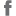

<!doctype html>
<html lang="pt-br">
<head>
	<meta charset="UTF-8">
	<title>Prêmios | 19 Design</title>
	<meta name="viewport" content="width=750">
	<link rel="stylesheet" href="style.css" media="screen">
	<!--[if lt IE 9]><script src="http://html5shiv.googlecode.com/svn/trunk/html5.js"></script><![endif]-->
</head>
<body class="page page-premios">
	<div id="wrap" class="cf">
		<header id="head" class="cf">
			<h1 id="logo"></h1>
			<nav id="nav">
				<ul id="menu">
					<li class="menu-item menu-item-1"><a href="#">Quem somos</a></li>
					<li class="menu-item menu-item-2"><a href="#">Área de atuação</a></li>
					<li class="menu-item menu-item-3"><a href="#">Trabalhos</a></li>
					<li class="menu-item menu-item-4"><a href="#">Prêmios</a></li>
				</ul>
			</nav>
			<ul id="social-menu">
				<li class="social-item"><a href="#"></a></li>
				<li class="social-item"><a href="#"></a></li>
				<li class="social-item"><a href="#"></a></li>
			</ul>
		</header>
		<hr>
		<section id="body" class="cf">
			<div id="content" class="cf">
	
				<article class="hentry cf">
					<h1 class="entry-title hide">Prêmios</h1>
					<div class="entry-content">
						<div class="columnize">
							<ul>
								<li>2008 / Grand Prix do 18º Prêmio Brasileiro de Excelência Gráfica Fernando Pini e o Certificado de Mérito no PIA &#8211; Printing Industry Awards 2008 (Benny) em Chicago com o livro “ A doce revolução de Oscar Niemeyer”.</li>
								<li>2006 / Os trabalhos Tom da Mata, Tom do Pantanal e Tom da Amazonia desenvolvidos para a Fundação Roberto Marinho mereceram o “Selo RiofazDesign 2006”.</li>
								<li>2004 / IF Comunication Design Award – categoria print media, Hannover, Alemanha. Catalogo para a exposição “Carnaval”, Centro Cultural Banco do Brasil</li>
								<li>2004 / VII Bienal de Design Gráfico – ADG</li>
								<li>Destaque na Categoria Miscelânea</li>
								<li>Projeto de Identidade Visual para a exposição “Carnaval”, Centro Cultural Banco do Brasil</li>
								<li>2000 / V Bienal de Design Gráfico – ADG</li>
								<li>Menção Honrosa. Projeto de identidade visual para a exposição “México: Coleção Guelman”</li>
								<li>2000 / 10º Prêmio Fernando Pini de Excelência Gráfica. Categoria de catálogo de arte. Exposição “Esplendores de Espanha”</li>
								<li>1990 / Medalha de prata no Prêmio Colunistas, Área de identidade visual, Exposição “Drummond, Alguma Poesia” / Centro de TV, Centro Cultural do Banco do Brasil (projeto desenvolvido em parceria com Ana Luisa Escorel)</li>
								<li>Mereceu uma matéria da revista Print, em 1986, por seu trabalho de projeto gráfico dos itens de identificação do país fantástico criado por Paul Mazursky, no filme “Luar sobre Parador”</li>
							</ul>
							<h2>Participações em Exposições</h2>
							<ul>
								<li>1982 / O Design no Brasil: História e Realidade. Exposição Inaugural do Sesc Pompéia / São Paulo</li>
								<li>1984 / 1ª Exposição Latino-Americana de Desenho Industrial. Museu de Arte Moderna /Rio de Janeiro</li>
								<li>1984 / Tradição e Ruptura. Fundação Bienal de São Paulo, Fiesp, Ndi / São Paulo</li>
								<li>1985 / Inter Decor ‘ 85. Utrecht / Holanda</li>
								<li>1988 / Brazil Designs. Art Director’s Club of New York</li>
								<li>1989 / 12 Brasilianer. Galeria Von Oertzen / Frankfurt</li>
								<li>1989 / Mostra Gráfica Brasil 89. Museu de Arte Moderna, Funarte / Rio de Janeiro</li>
								<li>1990 / 12 Graphistes Brésiliens</li>
								<li>Embaixada do Brasil / Paris</li>
								<li>1992 / Bienal Internacional del Cartel en México</li>
								<li>1992 / XV Biennale of Graphic Design Brno /Checoslováquia</li>
								<li>International Exhibition of Illustration and Editorial Art</li>
								<li>1992 Bienal Brasileira de Design / Curitiba</li>
								<li>1993 1º Rio Gráfico / Rio de Janeiro</li>
								<li>1994 ADG 2ª Bienal / São Paulo</li>
								<li>1994 ESDI &#8211; 30 anos / Rio de Janeiro</li>
								<li>1995 Il Brasile fa anche Design</li>
								<li>Mostra di Design Brasiliano / Consulado Geral do Brasil / Milão</li>
								<li>1995 O Novo Design Gráfico Brasileiro</li>
								<li>Faculdade de Belas Artes da Universidade de Lisboa / Portugal</li>
								<li>1995 Zgraf / International Exhibition of Graphic Design and Visual Communication / Croácia</li>
								<li>1998 XVIII Biennale of Graphic Design Brno / Checoslováquia</li>
								<li>2000 XIX Biennale of Graphic Design Brno / Checoslováquia</li>
								<li>2002 XX Biennale of Graphic Design Brno / Checoslováquia</li>
								<li>2004 XXI Biennale of Graphic Design Brno / Checoslováquia</li>
								<li>2000 ADG 5ª Bienal / São Paulo</li>
								<li>2004 ADG 7ª Bienal / São Paulo</li>
								<li>2004 International forum design Hannover &#8211; Exhibition Center / Hannover / Alemanha</li>
								<li>2006 “Brazil Design: the intimacy of Extremes&#8221; ( Designmai, Berlin) / Alemanha</li>
								<li>2006 “Brasil em Cartaz” / Chaumont, França</li>
								<li>2007 “Brazil AdDesign” / Art Directors Club Gallery / New York</li>
							</ul>
						</div>
					</div>
				</article>
	
			</div>
		</section>
		<footer id="foot" class="cf">
			<address id="hcard-19-design" class="vcard">
				<strong class="fn org">19 Design | Editora</strong> &nbsp;
				<span class="adr">
					<span class="street-address">Av. Epitácio Pessoa 3724 / 1º andar&nbsp;&nbsp;Lagoa</span>&nbsp;
					<span class="locality">Rio de Janeiro</span>&nbsp;
					<span class="region">RJ</span>&nbsp;
					<span class="country-name">Brasil</span>&nbsp;
				</span>
				T. <span class="tel">55 21 2527 1230</span>&nbsp;
				<a href="mailto:19design@19design.com.br" class="email">19design@19design.com.br</a>&nbsp;
			</address>
			<a href="#" id="menu-item-contact">Contato</a>
		</footer>
	</div>
	<script src="http://code.jquery.com/jquery-1.9.1.min.js"></script>
	<script src="http://code.jquery.com/jquery-migrate-1.1.1.min.js"></script>
	<script src="js/jquery.tinyscrollbar.min.js"></script>
	<script src="js/jquery.columnizer.js"></script>
	<script src="js/interface.js"></script>
</body>
</html>